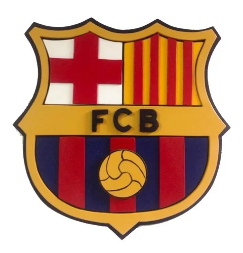
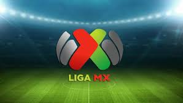
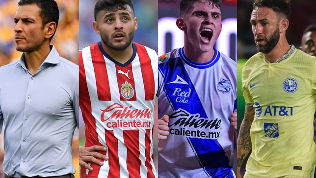

En otras noticias sobre el futbol
¿Qué necesita el Barcelona para poder clasificar a octavos de Champions League?
El Barcelona llega al partido contra el Bayern Munich con un pie afuera de la Champions League: para poder avanzar a octavos de finales, necesita tener un buen desempeño contra un cuadro que lo derrotó las últimas cuatro veces que se enfrentaron y además necesita que al Inter le vaya mal. Las probabilidades no están de su lado.
El miércoles, la suerte del Barcelona se juega simultáneamente en su partido contra el Bayern Munich y en el partido del Inter contra el Plzeň. Los culés no clasificarán si sucede cualquiera de estos tres escenarios en la fecha de esta semana:
Si pierden ante el Bayern
Si empatan y el Inter también empata
Si el Inter gana
El partido contra el Bayern es un gran desafío. El equipo alemán le ganó los últimos cuatro juegos que disputaron, con un saldo de 16 goles a favor y dos goles en contra, y viene con una fuerza que parece imparable: lleva un récord de 11 victorias consecutivas en esta fase de la competencia.
Futbol de Estufa Liga MX: Clausura 2023 ¡Rumores, altas y bajas del futbol mexicano!
El Apertura 2022 de la Liga MX se encuentra muy cerca concluir y conocer a su nuevo campeón. Mientras tanto, el resto de los equipos ya comienza a pensar en la siguiente campaña con los movimientos de plantilla.
América fue eliminado por Toluca en las semifinales,Jürgen Damm y Miguel Layún estarían apuntando a ser las primeras salidas del equipo. Por otra parte, los dos porteros del primer equipo: Guillermo Ochoa y Oscar Jiménez están por terminar contrato, un tema que la directiva tendrá que resolver en la próxima semana,buscara como refuerzo un defensa central del puebla.
Chivas se espera una renovación más en busca de ser el equipo aspirante al título que espera su afición. Los rojiblancos pusieron punto final a la era de Ricardo Pelaez como director deportivo y a la de Ricardo Cadena como director técnico. Ahora, Fernando Hierro será el encargado de tomar las riendas del Club Deportivo Guadalajara en busca de títulos.
Por su parte, los Pumas no pudieron acceder ni siquiera al repechaje de la Liga MX, lo que detonó una serie de cambios en el cuadro universitario. El primero de ellos fue la salida de Andrés Lillini, el director técnico argentino que llevó a este equipo a las finales del Guardianes 2020 y la Liga de Campeones de Concacaf 2022. Ahora, Universidad Nacional está buscando a su próximo estratega.
